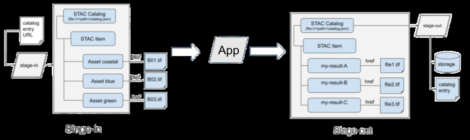

Data Access and Retrieval
Cómo STAC y COG permiten acceder a porciones concretas de un ráster directamente desde el almacenamiento en nube, y el papel del STAC Catalog como manifiesto en las fases stage-in y stage-out y en escenarios fan-in/fan-out.
The inherent characteristics of STAC and COG mean that we have the capability to directly port data into subsequent fully native cloud-based applications. STAC offers a structured approach to cataloguing geospatial assets and the STAC file, primarily consisting of
6 https://github.com/stac-api-extensions/filter
standardised metadata and pointers to data assets, simplifies data processing flow management. This becomes invaluable in multi-stage EO data processing workflows as it circumvents the traditionally cumbersome process that necessitated the sequential downloading, transformation, and subsequent uploading of datasets, a methodology that not only consumed significant time but also required substantial computational resources. Moreover, adopting the COG format introduces palpable economic advantages. Specifically, the format's design allows for access to only the indispensable segments of data, which effectively means that there's an elimination of any superfluous storage or transfer costs traditionally associated with handling extensive datasets.
When dealing with EO datasets, this means that users and applications can interactively access, visualise, and analyse specific sections of a geospatial raster directly from the cloud storage. This integration plays a pivotal role, especially in applications like real-time visualisation, on-the-fly analytics, and large-scale processing tasks where timely data access is paramount. Moreover, the synergy between STAC, COG, S3, and geospatial tools extends beyond just efficiency. It cultivates an environment where data is more accessible, shareable, and versatile. With COG support, results of EO products processing can be utilised by a broad spectrum of third-party applications, fostering collaboration and widening the horizons for data application.
STAC provides a standardised approach to data referencing, regardless of the processing model, ensures efficiency, accuracy, and scalability in EO data processing workflows. For example, in an application processing sequence that involves image rectification, merging, and change detection, a STAC file serves as a structured manifest. It consistently points to the necessary data assets for each step, ensuring that processing occurs on the appropriate datasets. The metadata within the STAC file provides specifics like timestamps, sensor details, and geographical bounds. This enables applications to programmatically select, filter, or prioritise data during processing. By employing STAC files, EO data processing applications can achieve streamlined data access, uniform representation, and efficient processing, without navigating through the complexities of diverse and dispersed geospatial datasets.

Figure above illustrates the role of STAC in standardising the referencing of EO data throughout various stages of an application's processing workflow. At the 'stage-in' phase, the process begins with a STAC Catalog, which is essentially a JSON file containing metadata and links to STAC Items representing EO data assets. These assets, such as spectral bands 'coastal', 'blue', and 'green', have their respective access references which point to their physical locations.
As the data transitions to the application, the STAC Catalog ensures a structured and orderly reference to all necessary data assets. This setup allows the application to process the EO data, whether it involves rectification, merging, change detection, or any other geospatial analysis task. The application, informed by the metadata within the STAC file, can programmatically filter and process the data according to timestamps, sensor specifications, and geographic boundaries.
Upon processing completion, the workflow moves to the 'stage-out' phase, where the application generates new STAC Items. These items now point to the processed results which are then stored for future access or distribution.
This workflow demonstrates how STAC provides a consistent and organised approach to handling EO data, ensuring that applications can access, utilise, and generate processed data without the need to manage varied data formats and structures manually. The use of STAC significantly enhances the efficiency, accuracy, and scalability of EO data processing workflows, catering to the needs of a wide range of geospatial applications within the CopernicusLAC initiative.
Also for managing and guiding the flow of data through various processing paradigms STAC Catalog files can be instrumental in creating manifests for both fan-in and fan-out processing instances. In a fan-in scenario, where multiple datasets are aggregated for a singular processing task, the STAC Catalog file can enlist all the necessary assets, ensuring that all input datasets are uniformly represented and accessible. Conversely, in a fan-out situation, where an individual dataset may lead to multiple parallel processing tasks, the STAC Catalog file ensures that each processing task has a clear and consistent reference to the correct subset of data.